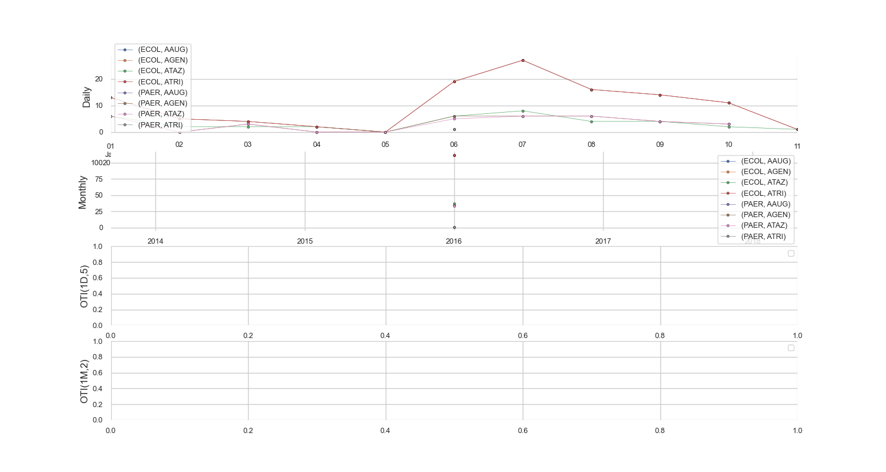

Note
Click here to download the full example code
Index - Frequency¶
Example using your package
Out:
--------------------------------------------------------------------------------
Show OVERALL frequencies:
--------------------------------------------------------------------------------
Pairs:
SENSITIVITY highly resistant intermediate not done resistant sensitive
SPECIE ANTIBIOTIC
ECOL AAUG 0.0 50.0 0.0 5457.0 36043.0
AGEN 0.0 79.0 0.0 2770.0 24657.0
ATAZ 3.0 218.0 1.0 1025.0 5893.0
ATRI 0.0 5.0 0.0 15249.0 25936.0
Antibiotics:
SENSITIVITY highly resistant intermediate not done resistant sensitive
ANTIBIOTIC
AAUG 0.0 50.0 0.0 5457.0 36043.0
AGEN 0.0 79.0 0.0 2770.0 24657.0
ATAZ 3.0 218.0 1.0 1025.0 5893.0
ATRI 0.0 5.0 0.0 15249.0 25936.0
Organisms:
SENSITIVITY highly resistant intermediate not done resistant sensitive
SPECIE
ECOL 3 352 1 24501 92529
--------------------------------------------------------------------------------
Show TEMPORAL frequencies:
--------------------------------------------------------------------------------
Daily:
SENSITIVITY highly resistant intermediate not done resistant sensitive
SPECIE ANTIBIOTIC DATE
ECOL AAUG 2009-01-03 0.0 0.0 0.0 1.0 0.0
2009-01-04 0.0 0.0 0.0 0.0 0.0
2009-01-05 0.0 0.0 0.0 0.0 0.0
2009-01-06 0.0 0.0 0.0 0.0 0.0
2009-01-07 0.0 0.0 0.0 0.0 0.0
... ... ... ... ... ...
ATRI 2016-01-07 0.0 0.0 0.0 12.0 15.0
2016-01-08 0.0 0.0 0.0 5.0 11.0
2016-01-09 0.0 0.0 0.0 10.0 4.0
2016-01-10 0.0 0.0 0.0 2.0 9.0
2016-01-11 0.0 0.0 0.0 0.0 1.0
[10229 rows x 5 columns]
Monthly:
SENSITIVITY highly resistant intermediate not done resistant sensitive
SPECIE ANTIBIOTIC DATE
ECOL AAUG 2009-01-31 0.0 0.0 0.0 1.0 0.0
2009-02-28 0.0 0.0 0.0 1.0 5.0
2009-03-31 0.0 0.0 0.0 21.0 785.0
2009-04-30 0.0 0.0 0.0 18.0 756.0
2009-05-31 0.0 0.0 0.0 42.0 749.0
... ... ... ... ... ...
ATRI 2015-09-30 0.0 0.0 0.0 104.0 158.0
2015-10-31 0.0 0.0 0.0 74.0 121.0
2015-11-30 0.0 0.0 0.0 70.0 104.0
2015-12-31 0.0 0.0 0.0 104.0 147.0
2016-01-31 0.0 0.0 0.0 49.0 63.0
[339 rows x 5 columns]
No handles with labels found to put in legend.
No handles with labels found to put in legend.
9 10 11 12 13 14 15 16 17 18 19 20 21 22 23 24 25 26 27 28 29 30 31 32 33 34 35 36 37 38 39 40 41 42 43 44 45 46 47 48 49 50 51 52 53 54 55 56 57 58 59 60 61 62 63 64 65 66 67 68 69 70 71 72 73 74 75 76 77 78 79 80 81 82 83 84 85 86 87 88 89 90 91 92 93 94 95 96 97 98 99 100 101 102 103 104 105 106 107 108 109 110 111 112 113 114 115 116 117 118 119 120 121 122 123 124 125 126 127 128 129 130 131 132 133 134 135 136 137 138 139 140 141 142 143 144 145 146 147 148 149 150 151 152 153 154 155 156 157 158 159 160 161 162 163 164 165 166 167 168 169 170 171 172 173 174 175 176 177 178 179 180 181 182 183 184 185 186 187 188 189 190 191 192 193 194 195 196 197 198 | # Import libraries
import sys
import glob
import pandas as pd
import seaborn as sns
import matplotlib as mpl
import matplotlib.pyplot as plt
# Import specific libraries
from pyamr.core.freq import Frequency
# Configure seaborn style (context=talk)
sns.set(style="white")
# Set matplotlib
mpl.rcParams['xtick.labelsize'] = 9
mpl.rcParams['ytick.labelsize'] = 9
mpl.rcParams['axes.titlesize'] = 11
mpl.rcParams['legend.fontsize'] = 9
# -----------------------
# Load data
# -----------------------
# Path
path = '../../../resources/data/nhs/susceptibility/complete/'
# Load all files
data = pd.concat([ \
pd.read_csv(f, parse_dates=['dateReceived'],
low_memory=False, nrows=200000)
for f in glob.glob(path + "/*.csv")])
# -------------------------
# Main
# -------------------------
# Keep only relevant columns
#data = data[['antibioticCode',
# 'organismCode',
# 'dateReceived',
# 'sensitivity']]
# .. note: To reduce computing time and to be able
# to plot the results we are selecting only
# one (organism, antimicrobial) pair.
# Selected
orgs = ['ECOL']
abxs = ['ATAZ', 'ATRI', 'AGEN', 'AAUG']
# Filter for two examples
is_org = data['organismCode'].isin(orgs)
is_abx = data['antibioticCode'].isin(abxs)
data = data[is_org & is_abx]
# -------------------------
# Create frequency instance
# -------------------------
# Create instance
freq = Frequency(column_antibiotic='antibioticCode',
column_organism='organismCode',
column_date='dateReceived',
column_outcome='sensitivity')
# ------------------------
# Examples compute overall
# ------------------------
# Compute pairs
pairs = freq.compute(data, by_category='pairs')
# Compute antibiotics
antibiotics = freq.compute(data, by_category='antibiotics')
# Compute organisms
organisms = freq.compute(data, by_category='organisms')
# Show
print("\n")
print("-" * 80)
print("Show OVERALL frequencies:")
print("-" * 80)
print("\nPairs:")
print(pairs)
print("\nAntibiotics:")
print(antibiotics)
print("\nOrganisms:")
print(organisms)
# -------------------------------------------
# Examples compute independent time intervals
# -------------------------------------------
# Examples compute ITI
daily = freq.compute(data, strategy='ITI',
by_category='pairs',
fs='1D')
monthly = freq.compute(data, strategy='ITI',
by_category='pairs',
fs='1M')
# Show
print("\n")
print("-" * 80)
print("Show TEMPORAL frequencies:")
print("-" * 80)
print("\nDaily:")
print(daily)
print("\nMonthly:")
print(monthly)
# -------------------------------------------
# Examples compute overlapping time intervals
# -------------------------------------------
"""
.. note: Not working! Fix!
# Examples compute OTI (daily)
oti_1 = freq.compute(data, strategy='OTI',
by_category='pairs',
wshift='1D',
wsize=5)
# Examples compute OTI (monthly)
oti_2 = freq.compute(data, strategy='OTI',
by_category='pairs',
wshift='1M',
wsize=2)
"""
# ----------------
# Plot
# ----------------
# Show comparison for each pair
f, axes = plt.subplots(4, 1, figsize=(15, 8))
# Flatten axes
axes = axes.flatten()
# Plot ITI (daily)
for i, (pair, group) in enumerate(daily.groupby(level=[0, 1])):
group.index = group.index.droplevel([0, 1])
group.sum(axis=1).plot(marker='o', ms=3, label=pair,
linewidth=0.5, markeredgecolor='k', markeredgewidth=0.3,
ax=axes[0])
# Plot ITI (monthly)
for i, (pair, group) in enumerate(monthly.groupby(level=[0, 1])):
group.index = group.index.droplevel([0, 1])
group.sum(axis=1).plot(marker='o', ms=3, label=pair,
linewidth=0.5, markeredgecolor='k', markeredgewidth=0.3,
ax=axes[1])
"""
.. note: Belongs to previously commented part
# Plot OTI
for i, (pair, group) in enumerate(oti_1.groupby(level=[0, 1])):
group.index = group.index.droplevel([0, 1])
group.sum(axis=1).plot(marker='o', ms=3, label=pair,
linewidth=0.5, markeredgecolor='k', markeredgewidth=0.3,
ax=axes[2])
# Plot OTI
for i, (pair, group) in enumerate(oti_2.groupby(level=[0, 1])):
group.index = group.index.droplevel([0, 1])
group.sum(axis=1).plot(marker='o', ms=3, label=pair,
linewidth=0.5, markeredgecolor='k', markeredgewidth=0.3,
ax=axes[3])
"""
# Set legend
for ax in axes:
ax.legend()
ax.set_xlabel('')
ax.grid(True)
# Set titles
axes[0].set_ylabel('Daily')
axes[1].set_ylabel('Monthly')
axes[2].set_ylabel('OTI(1D,5)')
axes[3].set_ylabel('OTI(1M,2)')
# Despine
sns.despine(bottom=True, left=True)
# Set title
plt.suptitle("Frequency (daily, monthly and overlapping intervals)")
# Show
plt.show()
|
Total running time of the script: ( 0 minutes 6.360 seconds)